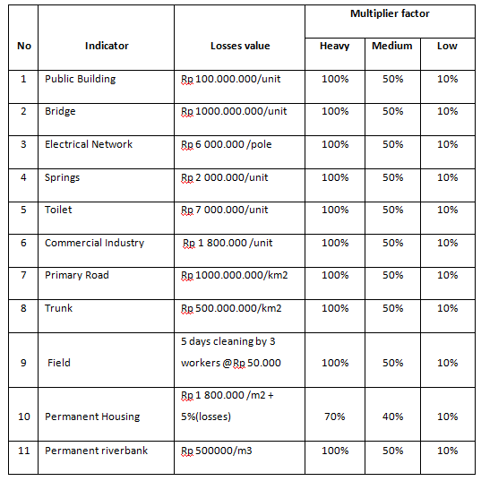
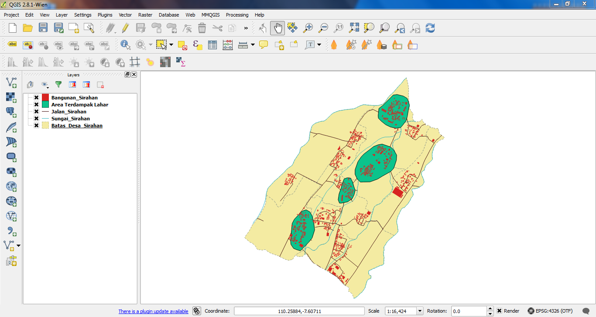
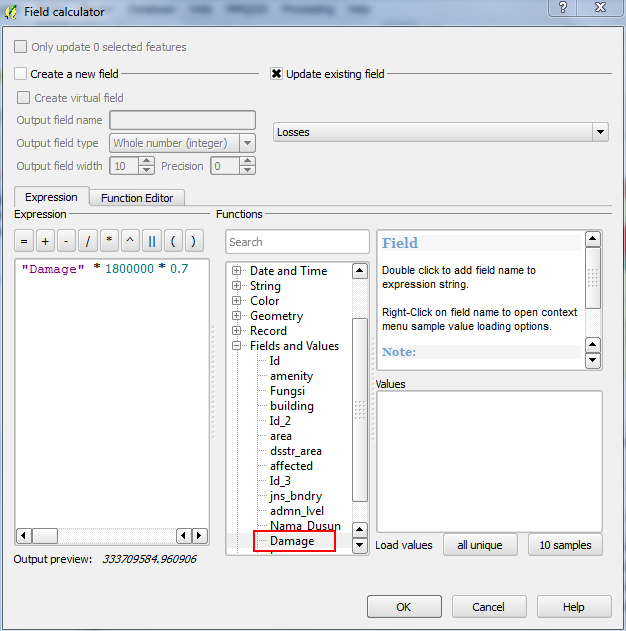
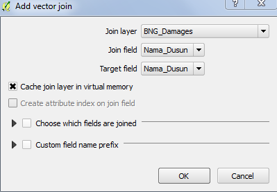
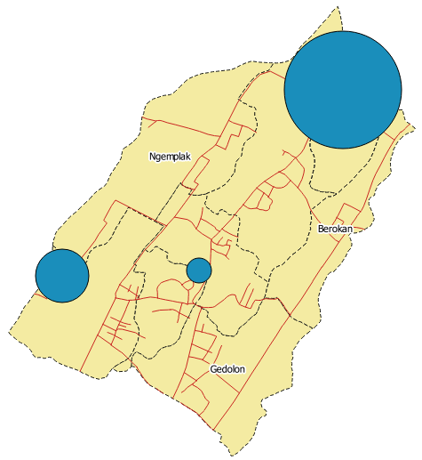

Module 5: Calculating Damages and Losses¶
Learning Objectives
Understand the definition of damages, losses and their calculation based on community exposure data
Understand damage and losses assessment values based on BNPB and BPBD
Make a damage and losses map
Calculate damage area
Manipulate attribute data of affected features to obtain damage values for each object
Manipulate attribute data of affected features to obtain loss values for each object
Group attribute data for administrative areas (hamlet, village, subdistrict)
Join attribute data for administrative areas (hamlet, village, subdistrict)
Present damage and loss values using charts
A Damage and Loss Assessment (DaLA) is usually created after a disaster. The standard DaLA methodology was developed by the UN Economic Commission for Latin America and the Caribbean (UN-ECLAC) in 1972, and has evolved with various international organisations since. Simply, it is a methodology for approximating damage and losses due to a disaster, basing calculations on a country’s economy and individual livelihoods to define the needs for recovery and reconstruction.
A Damage and Loss Assessment includes the following:
Damage calculated as the replacement value of totally or partially destroyed physical assets
Losses in the flows of economy that arise from the temporary absence of the damaged assets
The resultant impact on post-disaster macroeconomic performance, with special reference to economic growth/GDP, the balance of payments and fiscal situation of the government.
In this module we will learn how to calculate some of the basic data used in a DaLA, and use various QGIS functions to design a thematic map that shows damage and loss.
1. BPBD damage assessment guide¶
The BPBD has created a guide for damage and loss assessment for Indonesia, which defines varying degrees of damage and the economic impact of individual elements. Parts of this definition are shown here:
Notice that there are several elements at work here. First, damage to different types of infrastructure is “valued” differently. To put losses into monetary terms, the loss of a bridge has a loss value as does the loss of a public building or a private home. Then, depending on whether a feature suffers heavy, medium or low damage, a multiplier is applied to determine the value of the loss.
By adding up all of the damage it is possible to assess the total damages caused by a disaster. In the remainder of this module, we will calculate the value of the losses in our Sirahan project, and see how we can display them graphically using our map, based on the damage suffered in each hamlet.
2. Damage and losses assessment map¶
We will create a damage and loss assessment map using our data from Sirahan village that we have been working with throughout this unit.
Open QGIS and make sure that the following layers are loaded into your project:

area_terdampak_Sirahan
Jalan_Sirahan
Sungai_Sirahan
Batas_Desa_Sirahan
Bangunan_Sirahan
We will assume that all the buildings in the area_terdampak_Sirahan layer (hazard zone) suffered heavy damage from the disaster. Let’s create a spatial query to filter out these buildings.
Go to and enter the fields like this:
We now have a group of buildings selected which we are assuming will suffer heavy damages. According to the BNPB Guide, we can assess the loss of heavily damaged buildings at a rate of 1.8 million Rp. per square metre, and the multiplier factor is 70%. Our formula for calculating losses is:
Total Building area x Loss Value per m² x Multiplier factor
Therefore we want to calculate:
Total Building Area x 1.8 million Rp. x 70%
in order to get a calculation of the value of total losses.
We will use the Intersect Geoprocessing tool, so that we can combine attributes from our district layer with the selection of buildings we have just made.
Go to and fill in the fields as follows:
Save the result as Bangunan_Terdampak.
Hide the original buildings layer so that your map looks like this:
Run Intersect again, this time with the new Bangunan_Terdampak layer and the Batas_Desa_Sirahan layer, so that the attribute table will include the DUSUN attribute. Name the new layer bangunan_terdampak_perdusun.shp.
3. Calculating damage area¶
On the attribute table of bangunan_terdampak_perdusun, click the Toggle Editing button.
Click the New Column button.
Create a new column named Damage of type decimal number:
To calculate the damaged area of affected buildings we will use the field calculator to determine the number of square metres in each building feature. Click on Field Calculator.
Check the box next to Update existing field and select Damage_Area in the drop-down box.
Find $area under Geometry in the function list and double-click on it, so that it appears in the Expression box at the bottom. It should look like this:
Click OK. You will see that the column is filled in with the area, in square metres, of the buildings.
Click the Toggle Editing button and be sure to save your edits.
4. Calculating damages using the Group Stats plugin¶
We will be using a QGIS plugin called Group Stats in order to calculate damages by each hamlet within Sirahan. You must be connected to the internet to install this plugin.
Go to .
Go to the All tab. Type group stats. When you find the plugin, select it and click Install.
Once it is installed, you will find Group Stats on or your Toolbar. Click it.
The Group Stats window will appear.
To calculate building damages per hamlet, select bangunan_terdampak_perdusun in the drop-down box under layers.
Find Nama_Dusun in the list of fields. Drag and drop it to Rows.
Find Damage and sum in the list of fields. Drag and drop them to Value.
Click Calculate. The results should look like this:
Go to and save it as BNG_Damages.
5. Calculating losses¶
We’ve calculated the damaged area and we’ve created a table with damage data for various hamlets in Sirahan. Now let’s implement our losses formula in the same way.
Go back to the attribute table for bangunan_terdampak_perdusun and add a new column named Losses.
Open the Field Calculator.
Check the box next to Update existing field and choose Losses in the function list.
At the bottom in the Expression box, enter the following formula:
“Damage” * 1800000 * 0.7
Your new column is now filled with information calculated from this formula, which assesses the value of losses in Rp for each individual building.
Save the layer and end the editing session.
6. Calculating losses using the Group Stats plugin¶
Now let’s calculate losses per hamlet using the Group Stats again.
Open the Group Stats window.
Select bangunan_terdampak_perdusun in the drop-down box under layers.
Click Clear to start a new analysis.
Find Nama_Dusun in the list of fields. Drag and drop it to Rows.
Find Losses and sum in the list of fields. Drag and drop them to Value.
Click Calculate. The new table shows the losses in each hamlet:
Go to and save it as BNG_Losses.
7. Joining data¶
Now we will join the tables that we created to our Batas_Desa_Sirahan attribute table and then use them to add new columns to the file.
Add the files
BNG_DamagesandBNG_Lossesinto QGIS, using Add vector layer. Make sure you set the file type as CSV in the dialog so that CSV files appear.
The new files will appear in your Layers panel but not on your map, because they are not geographic data files, but rather tables.
Now we will perform an operation to join the layer Batas_Desa_Sirahan with BNG_Damage. Right-click on the Batas_Desa_Sirahan layer and open the Properties window.
Go to the Joins tab:
Click the plus sign and fill in the following fields:

Join layer: BNG_Damages
Join field: Nama_Dusun
Target field: Nama_Dusun
Click OK.
Click the plus sign again and fill in the following fields:
Join layer : BNG_Losses
Join field: Nama_Dusun
Target field : Nama_Dusun
Click OK.
Close the Properties window. Open the attribute table for Batas_Desa_Sirahan. The BNG_Damages and BNG_Losses columns are now attached based on the hamlet.
Note that the BNG_Damages and BNG_Losses columns are not permanently attached, but rather joined together with our file in the computer memory. We should save it as a new layer. Close the attribute table. Right-click the Batas_Desa_Sirahan layer and click Save as. Name the new layer analisis_dala_Sirahan.shp.
We need to convert the BNG_Damages and BNG_Losses column in our new layer to real numbers. Open the attribute table for analisis_dala_Sirahan. Click the Toggle editing button and open the Field Calculator.
This time, we will create a new field. Enter as the new field name Damages, with the output field type as Decimal number (real). Enter 20 as the field width and the precision as 10. Under the function list double-click BNG_Damage. The window should look like this:
Click OK.
Now, we will create another new field for Losses. Enter as the new field name Losses, with the output field type as Decimal number (real). Enter 20 as the field width and the precision as 10. Under the function list double-click BNG_Losses. Click OK.
Exit editing mode and save your changes.
8. Creating a chart¶
We will conclude by representing these damage and loss values as a chart in QGIS.
Open the the Properties window for analisis_dala_Sirahan. Go to the Diagram tab.
Check the box next to Display diagrams
Make sure Pie chart is selected in the drop-down box.
Under Available attributes, select Damages and click the plus(+) button.
You can change the colour by double-clicking the colour under Assigned attributes. The settings should look like this:
Go to the Size tab.
Disable the fixed value, and then click Find Maximum Value. Change the scale value to Area.
You may change the value next to Size also if you feel the diagram is too big.
The resulting map will look like this:
The size of each bubble represents the loss values in each hamlet. The bigger the size, the heavier the losses. Creating a map with this sort of chart can be an effective way to communicate the impact of a disaster. Now you can lay out your map, and then create another map showing Losses.